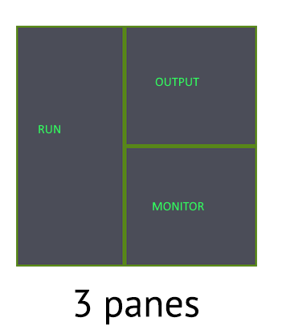

Using TMUX Terminal Multiplexer

In the early days working as a junior developer working on Hughes satellite dish tv networks, I had to use multiple machines, one for looking at streaming movies and another for looking at the device logs at the same time. It was very clear to me since then using multiple windows, machines, screens without the need to switch was a major productivity booster. Now, as part of my Dev-ops related work, I need to work with multiple servers and was looking at optimizing my workflow for consoles using SSH. Enter TMUX - short name for terminal multiplexer.
My workflow typically uses a minimum 3 windows as shown below.

- Primary (RUN) - the biggest window for running the main tools and commands e.g: Kubernetes, Docker, Maven build etc..
- Secondary (OUTPUT) - for watching the output of the tools e.g: tailing pod logs
- Tertiary (MONITOR) - for monitoring state and other related work e.g: monitoring pod states
The first try was running three separate SSH sessions in three windows. I could not see all windows at the same time without the need for switching explicitly. The second try was using cmder tab groups. This worked very well since I could see all windows, maximize anyone as required, create more windows while seeing them at the same time. I could save and restore the layout as required. The only issue was losing the session information - the history of commands, temporary environment variables, repeating earlier executed commands etc.. I finally decided to switch to tmux.
Tmux is good for almost all the use-cases that I need:
- Seeing all windows at the same time
- Switching between windows easily without losing context
- Maximizing specific window
- Saving and restoring session since tmux remains alive on server side so that a client can reconnect again by attaching to the same session
As an added bonus, tmux can
- Survive connection drops since the server side connection is maintained.
- Share session with others
- Scriptable configuration
There are zillions of excellent tmux resources for installation, configuration and usage. I will mention the ones that really worked for me.
The above can be put in the .bashrc snippet which runs on login.
function tmux() {
tmuxcmd="LD_LIBRARY_PATH=$MY_LINUX_ROOTDIR $MY_LINUX_ROOTDIR/tmux -f $XDG_CONFIG_HOME/tmux/tmux.conf"
if [ $# -eq 0 ]; then
eval $tmuxcmd new -A -s default
else
eval $tmuxcmd "$@"
fi
}
if command -v tmux &> /dev/null && [ -z "$TMUX" ]; then
read -p "Run tmux[y/N]? " -n1 ans
if [[ "$ans" == y ]]; then
tmux
fi
fi
- Installing tmux on each remote server can be a chore. The alternative I use is to copy the tmux executable and related shared libraries in a folder. LD_LIBRARY_PATH needs to be set so that the shared libraries can be properly picked up by tmux.
- Tmux does not support XDG_CONFIG conventions so we need to pass it explicitly over the command line using the -f option.
- The tmux function starts a session using the name and other options passed in. If no arguments are passed, it creates a new session (default) if not already present, else it connects to the existing session named default.
- If Tmux is accessible, the user is prompted to run a tmux session or not. If yes, the tmux function is invoked for creating or attaching to the default session.
The useful tmux conf settings that help are:
# ---------------------------------------------------
# Window/Pane settings
# ---------------------------------------------------
# start with window 1 (instead of 0)
set -g base-index 1
set -g renumber-windows on
# start with pane 1
set -g pane-base-index 1
# split panes using | and -, make sure they open in the same path
bind + split-window -h -c "#{pane_current_path}"
bind h split-window -h -c "#{pane_current_path}"
bind - split-window -v -c "#{pane_current_path}"
bind v split-window -v -c "#{pane_current_path}"
# open new windows in the current path
bind c new-window -c "#{pane_current_path}"
# don't rename windows automatically
set -g allow-rename off
# Use Alt-arrow keys without prefix key to switch panes
bind -n M-Left select-pane -L
bind -n M-Right select-pane -R
bind -n M-Up select-pane -U
bind -n M-Down select-pane -D
# Use Shift-Tab to switch back and forth
bind -n S-Tab select-pane -L
# Use Shift-arrow keys without prefix key to switch windows
unbind p
unbind n
bind -n S-Left previous-window
bind -n S-Right next-window
# Use Ctrl-id keys without prefix key to switch panes
bind -n M-1 select-pane -t 1
bind -n M-2 select-pane -t 2
bind -n M-3 select-pane -t 3
bind -n M-4 select-pane -t 4
# Resize
unbind M-m
bind-key -n M-m resize-pane -Z
bind-key J resize-pane -D 5
bind-key K resize-pane -U 5
bind-key H resize-pane -L 5
bind-key L resize-pane -R 5
bind-key M-j resize-pane -D
bind-key M-k resize-pane -U
bind-key M-h resize-pane -L
bind-key M-l resize-pane -R
- h or + for horizontal pane splitting
- v or - for vertical pane splitting
- c for new window
- Name windows starting from 1 to n. Switching is a matter of pressing Ctrl or Alt 1 to n. I chose Alt since Ctrl shortcuts interfere with cmder shortcuts.
- Alt m to maximize current pane.
- Vim style shortcuts to resize panes
The workflow
With all this in place, the workflow for working on a remote server becomes:
- Logon to the server and say yes when asked to start tmux. This starts a new session or attaches to an existing one.
- Create as many windows and panes as required.
- Never exit the session. Detach the session and then exit so that the session is available later.
Resources
Tags: productivity, command_line, ssh